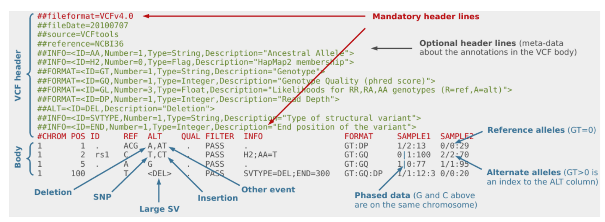
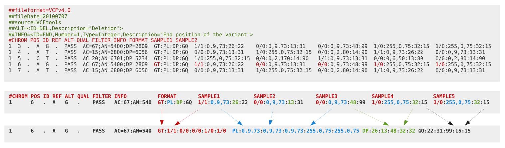
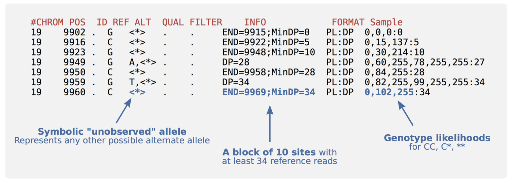

Exercises
NGS Data formats and QC
Introduction
There are several file formats for storing Next Generation Sequencing (NGS) data. In this tutorial we will look at some of the most common formats for storing NGS reads and variant data. We will cover the following formats:
FASTQ - This format stores unaligned read sequences with base qualities
SAM/BAM - This format stores unaligned or aligned reads (text and binary formats)
CRAM - This format is similar to BAM but has better compression than BAM
VCF/BCF - Flexible variant call format for storing SNPs, indels, structural variations (text and binary formats)
Following this, we will work through some examples of converting between the different formats.
Further to understanding the different file formats, it is important to remember that all sequencing platforms have technical limitations that can introduce biases in your sequencing data. Because of this it is very important to check the quality of the data before starting any analysis, whether you are planning to use something you have sequenced yourself or publicly available data. In the latter part of this tutorial we will describe how to perform a QC assessment for your NGS data.
Tutorial sections
This tutorial comprises the following sections:
1. Data formats
2. QC assessment
If you have time you can also complete:
3. File conversion
Running the commands from this tutorial
You can follow this tutorial by typing all the commands you see into a terminal window. This is similar to the “Command Prompt” window on MS Windows systems, which allows the user to type DOS commands to manage files.
To get started, open a new terminal on your computer and type the command below:
cd ~/course-data/data_formats/
Now you can follow the instructions in the tutorial from here.
Let’s get started!
This tutorial assumes that you have samtools, bcftools and Picard tools installed on your computer.
These are already installed on the VM you are using. To check that these are installed, you can run the following commands:
samtools --help
bcftools --help
picard -h
This should return the help message for samtools, bcftools and picard tools respectively.
To get started with the tutorial, go to the first section: Data formats
Data formats for NGS data
Here we will take a closer look at some of the most common NGS data formats. First, check you are in the correct directory:
pwd
It should display something like:
/home/manager/course_data/data_formats/
FASTA
Q1: How many sequences are there in the fasta file data/example.fasta? (Hint: is there a grep option you can use?)
FASTQ
Q2: How many reads are there in the file example.fastq? (Hint: remember that @ is a possible quality score. Is there something else in the header that is unique?)
SAM
Look at the following line from the header of a SAM file and answering the questions that follow:
@RG ID:ERR003612 PL:ILLUMINA LB:g1k-sc-NA20538-TOS-1 PI:2000 DS:SRP000540 SM:NA20538 CN:SC
Q3: What does RG stand for?
Q4: What is the sequencing platform?
Q5: What is the sequencing centre?
Q6: What is the lane identifier?
Q7: What is the expected fragment insert size?
Let’s have a look at example.sam. Notice that we can use the standard UNIX operations like cat on this file.
cat data/example.sam
Q8: What is the mapping quality of ERR003762.5016205? (Hint: can you use grep and awk to find this?)
Q9: What is the CIGAR string for ERR003814.6979522? (Hint: we will go through the meaning of CIGAR strings in the next section)
Q10: What is the inferred insert size of ERR003814.1408899?
CIGAR string
Q11: What does the CIGAR from Q9 mean?
Q12: How would you represent the following alignment with a CIGAR string?
Ref: ACGT- - - - ACGTACGT
Read: ACGTACGTACGTACGT
BAM
BAM (Binary Alignment/Map) format, is a compressed binary version of SAM. This means that, while SAM is human readable, BAM is only readable for computers. BAM files can be viewed using samtools, and will then have the same format as a SAM file. The key features of BAM are:
• Can store alignments from most mappers
• Supports multiple sequencing technologies
• Supports indexing for quick retrieval/viewing
• Compact size (e.g. 112Gbp Illumina = 116GB disk space)
• Reads can be grouped into logical groups e.g. lanes, libraries, samples
• Widely supported by variant calling packages and viewers
Since BAM is a binary format, we can’t use the standard UNIX operations directly on this file format.
Samtools is a set of programs for interacting with SAM and BAM files. Using the samtools view command, print the header of the BAM file:
samtools view -H data/NA20538.bam
Q13: What version of the human assembly was used to perform the alignments? (Hint: Can you spot this somewhere in the @SQ records?)
Q14: How many lanes are in this BAM file? (Hint: Do you recall what RG represents?)
Q15: What programs were used to create this BAM file? (Hint: have a look for the program record, @PG)
Q16: What version of bwa was used to align the reads? (Hint: is there anything in the @PG record that looks like it could be a version tag?)
The output from running samtools view on a BAM file without any options is a headerless SAM file.
This gets printed to STDOUT in the terminal, so we will want to pipe it to something. Let’s have a look at the first read of the BAM file:
samtools view data/NA20538.bam | head -n 1
Q17: What is the name of the first read? (Hint: have a look at the alignment section if you can’t recall the different fields)
Q18: What position does the alignment of the read start at?
CRAM
Even though BAM files are compressed, they are still very large. Typically they use 1.5-2 bytes for each base pair of sequencing data that they contain, and while disk capacity is ever improving, increases in disk capacity are being far outstripped by sequencing technologies.
BAM stores all of the data, this includes every read base, every base quality, and it uses a single conventional compression technique for all types of data. CRAM was designed for better compression of genomic data than SAM/BAM. CRAM uses three important concepts:
• Reference based compression
• Controlled loss of quality information
• Different compression methods to suit the type of data, e.g. base qualities vs. metadata vs. extra tags
The figure below displays how reference-based compression works. Instead of saving all the bases of all the reads, only the nucleotides that differ from the reference, and their positions, are kept.


In lossless (no information is lost) mode a CRAM file is 60% of the size of a BAM file, so archives and sequencing centres have moved from BAM to CRAM.
Since samtools 1.3, CRAM files can be read in the same way that BAM files can. We will look closer at how you can convert between SAM, BAM and CRAM formats in the next section.
Indexing
To allow for fast random access of regions in BAM and CRAM files, they can be indexed. The files must first be coordinate-sorted rather that sorted by read name. This can be done using samtools sort. If no options are supplied, it will by default sort by the left-most position of the reference.
samtools sort -o data/NA20538_sorted.bam data/NA20538.bam
Now we can use samtools index to create an index file (.bai) for our sorted BAM file:
samtools index data/NA20538_sorted.bam
To look for reads mapped to a specific region, we can use samtools view and specify the region we are interested in as: RNAME[:STARTPOS[-ENDPOS]]. For example, to look at all the reads mapped to a region called chr4, we could use:
samtools view alignment.bam chr4
To look at the region on chr4 beginning at position 1,000,000 and ending at the end of the chromosome, we can do:
samtools view alignment.bam chr4:1000000
And to explore the 1001bp long region on chr4 beginning at position 1,000 and ending at position
2,000, we can use:
samtools view alignment.bam chr4:1000-2000
Q19: How many reads are mapped to region 20025000-20030000 on chromosome 1?
VCF

The VCF file format was introduced to store variation data. VCF consists of tab-delimited text and is parsable by standard UNIX commands which makes it flexible and user-extensible. The figure below provides an overview of the different components of a VCF file:
VCF header
The VCF header consists of meta-information lines (starting with ##) and a header line (starting with #). All meta-information lines are optional and can be put in any order, except for fileformat. This holds the information about which version of VCF is used and must come first.
The meta-information lines consist of key=value pairs. Examples of meta-information lines that can be included are ##INFO, ##FORMAT and ##reference. The values can consist of multiple fields enclosed by <>. More information about these fields is available in the VCF specification http://samtools.github.io/hts-specs/VCFv4.3.pdf. This can be accessed using a web browser and there is a copy in the QC directory.
Header line The header line starts with # and consists of 8 required fields:
1. CHROM: an identifier from the reference genome
2. POS: the reference position
3. ID: a list of unique identifiers (where available)
4. REF: the reference base(s)
5. ALT: the alternate base(s)
6. QUAL: a phred-scaled quality score
7. FILTER: filter status
8. INFO: additional information
If the file contains genotype data, the required fields are also followed by a FORMAT column header, and then a number of sample IDs. The FORMAT field specifies the data types and order. Some examples of these data types are:
• GT: Genotype, encoded as allele values separated by either / or |
• DP: Read depth at this position for this sample
• GQ: Conditional genotype quality, encoded as a phred quality
Body
In the body of the VCF, each row contains information about a position in the genome along with genotype information on samples for each position, all according to the fields in the header line.
BCF
BCF is a compressed binary representation of VCF. VCF can be compressed with BGZF (bgzip) and indexed with TBI or CSI (tabix), but even compressed
it can still be very big. For example, a compressed VCF with 3781 samples of human data will be 54 GB for chromosome 1, and 680 GB for the whole genome. VCFs can also be slow to parse, as text conversion is slow. The main bottleneck is the “FORMAT” fields. For this reason the BCF format was developed.
In BCF files the fields are rearranged for fast access. The following images show the process of converting a VCF file into a BCF file.

Bcftools comprises a set of programs for interacting with VCF and BCF files. It can be used to convert between VCF and BCF and to view or extract records from a region.
bcftools view
Let’s have a look at the header of the file 1kg.bcf in the data directory. Note that bcftools uses -h to print only the header, while samtools uses -H for this.
bcftools view -h data/1kg.bcf
Similarly to BAM, BCF supports random access, that is, fast retrieval from a given region. For this, the file must be indexed:
bcftools index data/1kg.bcf
Now we can extract all records from the region 20:24042765-24043073, using the -r option. The -H option will make sure we don’t include the header in the output:
bcftools view -H -r 20:24042765-24043073 data/1kg.bcf
bcftools query
The versatile bcftools query command can be used to extract any VCF field. Combined with standard UNIX commands, this gives a powerful tool for quick querying of VCFs. Have a look at the usage options:
bcftools query -h
Let’s try out some useful options. As you can see from the usage, -l will print a list of all the samples in the file. Give this a go:
bcftools query -l data/1kg.bcf
Another very useful option is -s which allows you to extract all the data relating to a particular sample. This is a common option meaning it can be used for many bcftools commands, like bcftools view. Try this for sample HG00131:
bcftools view -s HG00131 data/1kg.bcf | head -n 50
The format option, -f can be used to select what gets printed from your query command. For example, the following will print the position, reference base and alternate base for sample HG00131, separated by tabs:
bcftools query -f'%POS\t%REF\t%ALT\n' -s HG00131 data/1kg.bcf | head
Finally, let’s look at the -i option. With this option we can select only sites for which a particular expression is true. For instance, if we only want to look at sites that have at least 2 alternate alleles, we can use the following expression (piped to head to only show a subset of the output):
bcftools query -f'%CHROM\t%POS\n' -i 'AC[0]>2' data/1kg.bcf | head
We use -i with the expression AC[0]>2. AC is an info field that holds the allele _count.
Some fields can hold multiple values, so we use AC[0]>2 to indicate that we are looking for the first value (this is zero indexed, and hence starts at 0 instead of 1), and that this value should be > 2. To format our output, we use -f to specify that we want to print the chromosome name and position.
There is more information about expressions on the bcftools manual page http://samtools.github.io/bcftools/bcftools.html#expressions
Now, try and answer the following questions about the file 1kg.bcf in the data directory. For more information about the different usage options you can open the bcftools query manual page http://samtools.github.io/bcftools/bcftools.html#query in a web browser.
Q20: What version of the human assembly do the coordinates refer to?
Q21: How many samples are there in the BCF?
Q22: What is the genotype of the sample HG00107 at the position 20:24019472? (Hint: use the combination of -r, -s, and -f options)
Q23: How many positions are there with more than 10 alternate alleles? (Hint: use the -i filtering option)
Q24: In how many positions does HG00107 have a non-reference genotype and a read depth bigger than 10? (Hint: you can use pipes to combine bcftools queries)
gVCF
Often it is not enough to know variant sites only. For instance, we don’t know if a site was dropped because it matches the reference or because the data is missing. We sometimes need evidence for both variant and non-variant positions in the genome. In gVCF format, blocks of reference-only sites can be represented in a single record using the “INFO/END” tag. Symbolic alleles (<*>) are used for incremental calling:

Q25: In the above example, what is the size of the reference-only block starting at position 9923?
Q26: For the same block, what is the first base?
Q27: How many reference reads does the block have?
Now continue to the next section of the tutorial: QC assessment of NGS data.
QC assessment of NGS data
QC is an important part of any analysis. In this section we are going to look at some of the metrics and graphs that can be used to assess the QC of NGS data.
Base quality
Illumina sequencing technology relies on sequencing by synthesis. One of the most common problems with this is dephasing. For each sequencing cycle, there is a possibility that the replication machinery slips and either incorporates more than one nucleotide or perhaps misses to incorporate one at all. The more cycles that are run (i.e. the longer the read length gets), the greater the accumulation of these types of errors gets. This leads to a heterogeneous population in the cluster, and a decreased signal purity, which in turn reduces the precision of the base calling. The figure below shows an example of this.

Because of dephasing, it is possible to have high-quality data at the beginning of the read but really low-quality data towards the end of the read. In those cases you can decide to trim off the low-quality reads, for example using a tool called Trimmomatic.
The figures below shows an example of a good sequencing run (left) and a poor sequencing run (right).

Other base calling errors
There are several different reasons for a base to be called incorrectly, as shown in the figure below.
Phasing noise and signal decay is a result of the dephasing issue described above. During library preparation, mixed clusters can occur if multiple templates get co-located. These clusters should be removed from the downstream analysis. Boundary effects occur due to optical effects when the intensity is uneven across each tile, resulting in higher intensity found toward the center. Cross-talk occurs because the emission frequency spectra for each of the four base dyes partly overlap, creating uncertainty. Finally, for previous sequencing cycle methods T fluorophore accumulation was an issue, where incomplete removal of the dye coupled to thymine lead to an ambient accumulation the nucleotides, causing a false high Thymine trend.

Mismatches per cycle
Aligning reads to a high-quality reference genome can provide insight to the quality of a sequencing run by showing you the mismatches to the reference sequence. This can help you detect cycle-specific errors. Mismatches can occur due to two main causes, sequencing errors and differences between your sample and the reference genome, which is important to bear in mind when interpreting mismatch graphs. The figure below shows an example of a good run (left) and a bad one (right). In the graph on the left, the distribution of the number of mismatches is even between the cycles, which is what we would expect from a good run. However, in the graph on the right, two cycles stand out with a lot of mismatches compared to the other cycles.

GC content
It is a good idea to compare the GC content of the reads against the expected distribution in a reference sequence. The GC content varies between species, so a shift in GC content like the one seen below could be an indication of sample contamination. In the left graph below, we can see that the GC content of the sample is about the same as for the reference, at ~38%. However, in the right graph, the GC content of the sample is closer to 55%, indicating that there is an issue with this sample.

GC content by cycle
Looking at the GC content per cycle can help detect if the adapter sequence was trimmed. For a random library, it is expected to be little to no difference between the different bases of a sequence run, so the lines in this plot should be parallel with each other like in the graph on the left below.
In the graph on the right, the initial spikes are likely due to adapter sequences that have not been removed.

Fragment size
For paired-end sequencing the size of DNA fragments also matters. In the first of the examples below, the fragment size peaks around 440 bp. In the second however, there is also a peak at around 200 bp. This indicates that there was an issue with the fragment size selection during library prep.

Q1: The figure below is from a 100bp paired-end sequencing. Can you spot any problems?

Insertions/Deletions per cycle
Sometimes, air bubbles occur in the flow cell, which can manifest as false indels. The spike in the right image provides an example of how this can look.

Generating QC stats
Now let’s try this out! We will generate QC stats for two lanes of Illumina paired-end sequencing data from yeast. The reads have already been aligned to the Saccromyces cerevisiae reference genome to produce the BAM file lane1.sorted.bam.
Now we will use samtools stats to generate the stats for the primary alignments. The option -f can be used to filter reads with specific tags, while -F can be used to filter out reads with specific tags. The following command will include only primary alignments:
samtools stats -F SECONDARY data/lane1.sorted.bam > data/lane1.sorted.bam.bchk
Have a look at the first 47 lines of the statistics file that was generated:
head -n 47 data/lane1.sorted.bam.bchk
This file contains a number of useful stats that we can use to get a better picture of our data, and it can even be plotted with plot-bamstats, as you will see soon. First let’s have a closer look at some of the different stats. Each part of the file starts with a # followed by a description of the section and how to extract it from the file. Let’s have a look at all the sections in the file:
grep ^'#' data/lane1.sorted.bam.bchk | grep 'Use'
Summary Numbers (SN)
This initial section contains a summary of the alignment and includes some general statistics. In particular, you can see how many bases mapped, and how much of the genome that was covered.
Now look at the output and try to answer the questions below.
Q2: What is the total number of reads?
Q3: What proportion of the reads were mapped?
Q4: How many pairs were mapped to a different chromosome?
Q5: What is the insert size mean and standard deviation?
Q6: How many reads were paired properly?
Generating QC plots
Finally, we will create some QC plots from the output of the stats command using the command plot-bamstats which is included in the samtools package:
plot-bamstats -p data/lane1-plots/ data/lane1.sorted.bam.bchk
Now in your web browser open the file lane1-plots/index.html to view the QC information.
Q7: How many reads have zero mapping quality?
Q8: Which read (forward/reverse) of the first fragments and second fragments are higher base quality on average?
Now continue to the next section of the tutorial: File conversion.
File conversion
In this section we are going to look at how to convert from one file format to another. There are many tools available for converting between file formats, and we will use some of the most common ones: samtools, bcftools and Picard.
SAM to BAM
To convert from SAM to BAM format we are going to use the samtools view command. In this instance, we would like to include the SAM header, so we use the -h option:
samtools view -h data/NA20538.bam > data/NA20538.sam
Now, have a look at the first ten lines of the SAM file. They should look like they did in the previous section when you viewed the BAM file header.
head data/NA20538.sam
Well that was easy! And converting SAM to BAM is just as straightforward. This time there is no need for the -h option, however we have to tell samtools that we want the output in BAM format.
We do so by adding the -b option:
samtools view -b data/NA20538.sam > data/NA20538_2.bam
Samtools is very well documented, so for more usage options and functions, have a look at the samtools manual http://www.htslib.org/doc/samtools-1.0.html.
BAM to CRAM
The samtools view command can be used to convert a BAM file to CRAM format. In the data directory there is a BAM file called yeast.bam that was created from S. cerevisiae Illumina sequencing data. There is also a reference genome in the directory, called Saccharomyces_cerevisiae.EF4.68.dna.toplevel.fa. For the conversion, an index file (.fai) for the reference must be created. This can be done using samtools faidx. However, as we will see, samtools will generate this file on the fly when we specify a reference file using the -F option.
To convert to CRAM, we use the -C option to tell samtools we want the output as CRAM, and the -T option to specify what reference file to use for the conversion. We also use the -o option to specify the name of the output file. Give this a try:
samtools view -C -T data/Saccharomyces_cerevisiae.EF4.68.dna.toplevel.fa -o data/yeast.cram data/yeast.bam
Have a look at what files were created:
ls -l data
As you can see, this has created an index file for the reference genome called Saccharomyces_cerevisiae.EF4.68.dna.toplevel.fa.fai and the CRAM file yeast.cram.
Q1: Since CRAM files use reference-based compression, we expect the CRAM file to be smaller than the BAM file. What is the size of the CRAM file?
Q2: Is your CRAM file smaller than the original BAM file?
To convert CRAM back to BAM, simply change -C to -b and change places for the input and output CRAM/BAM:
samtools view -b -T data/Saccharomyces_cerevisiae.EF4.68.dna.toplevel.fa -o data/yeast.bam data/yeast.cram
FASTQ to SAM
SAM format is mainly used to store alignment data, however in some cases we may want to store
the unaligned data in SAM format and for this we can use the picard tools FastqToSam application.
Picard tools is a Java application that comes with a number of useful options for manipulating high-throughput sequencing data. .
To convert the FASTQ files of lane 13681_1#18 to unaligned SAM format, run:
picard FastqToSam F1=data/13681_1#18_1.fastq.gz F2=data/13681_1#18_2.fastq.gz O=data/13681_1#18.sam SM=13681_1#18
From here you can go on and convert the SAM file to BAM and CRAM, as described previously.
There are also multiple options for specifying what metadata to include in the SAM header. To see all available options, run:
picard FastqToSam -h
CRAM to FASTQ
It is possible to convert CRAM to FASTQ directly using the samtools fastq command. However, for many applications we need the fastq files to be ordered so that the order of the reads in the first file match the order of the reads in the mate file. For this reason, we first use samtools collate to produce a collated BAM file.
samtools collate data/yeast.cram data/yeast.collated
The newly produced BAM file will be called yeast.collated.bam. Let’s use this to create two FASTQ files, one for the forward reads and one for the reverse reads:
samtools fastq -1 data/yeast.collated_1.fastq -2 data/yeast.collated_2.fastq data/yeast.collated.bam
For further information and usage options, have a look at the samtools manual page (http://www.htslib.org/doc/samtools.html).
VCF to BCF
In a similar way that samtools view can be used to convert between SAM, BAM and CRAM, bcftools view can be used to convert between VCF and BCF. To convert the file called 1kg.bcf to a compressed VCF file called 1kg.vcf.gz, run:
bcftools view -O z -o data/1kg.vcf.gz data/1kg.bcf
The -O option allows us to specify in what format we want the output, compressed BCF (b), uncompressed BCF (u), compressed VCF (z) or uncompressed VCF (v). With the -o option we can select the name of the output file.
Have a look at what files were generated (the options -lrt will list the files in reverse chronological order):
ls -lrt data
This also generated an index file, 1kg.bcf.csi.
To convert a VCF file to BCF, we can run a similar command. If we want to keep the original BCF, we need to give the new one a different name so that the old one is not overwritten:
bcftools view -O b -o data/1kg_2.bcf data/1kg.vcf.gz
Congratulations you have reached the end of the Data formats and QC tutorial!